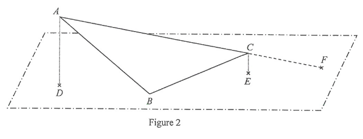

HKDSE 2017 · P1 · Q19 Thin Triangular Metal Sheet — 3D & Trigonometry
Figure 2 — Interactive Diagram
3D 互動模型 — 拖動旋轉查看不同角度
Vertex A / DVertex BVertex C / EPoint F / PMetal sheet ABCVertical / construction
Question. \(ABC\) is a thin triangular metal sheet, where \(BC=24\text{ cm}\), \(\angle BAC=30^\circ\) and \(\angle ACB=42^\circ\).
(a) Find the length of \(AC\). [2 marks]
(b) In Figure 2, the thin metal sheet \(ABC\) is held such that only the vertex \(B\) lies on the horizontal ground. \(D\) and \(E\) are points lying on the horizontal ground vertically below the vertices \(A\) and \(C\) respectively. \(AC\) produced meets the horizontal ground at the point \(F\). A craftsman finds that \(AD=10\text{ cm}\) and \(CE=2\text{ cm}\).
(i) Find the distance between \(C\) and \(F\).
(ii) Find the area of \(\triangle ABF\).
(iii) Find the inclination of the thin metal sheet \(ABC\) to the horizontal ground.
(iv) The craftsman claims that the area of \(\triangle BDF\) is greater than \(460\text{ cm}^2\). Do you agree? Explain your answer. [11 marks]

Figure (original exam diagram)
STEP 1 · Part (a) — Sine rule for AC
In \(\triangle ABC\) the third angle is \(\angle ABC=180^\circ-30^\circ-42^\circ=108^\circ\). By the sine rule,
💡 The side opposite a larger angle is longer — \(AC\) is opposite \(108^\circ\), the largest angle.
\(AC\approx 45.7\text{ cm}\)
Sine Formula\(\dfrac{a}{\sin A}=\dfrac{b}{\sin B}=\dfrac{c}{\sin C}\)With \(BC=24\) opposite \(\angle BAC=30^\circ\) and \(AC\) opposite \(\angle ABC=108^\circ\), the formula gives \(AC\).
STEP 2 · Part (b)(i) — Similar triangles & CF
Both \(AD\) and \(CE\) are perpendicular to the horizontal ground, so \(AD\parallel CE\). Hence \(\triangle ADF\sim\triangle CEF\) (AA).
💡 \(F\) lies beyond \(C\) because \(A\) is higher above the ground than \(C\).
\(CF\approx 11.4\text{ cm}\)
Similar Triangles (AA)\(AD\parallel CE \;\Longrightarrow\; \dfrac{AF}{CF}=\dfrac{AD}{CE}\)Both \(AD\) and \(CE\) are vertical, so \(\triangle ADF\sim\triangle CEF\) and \(\dfrac{AF}{CF}=\dfrac{10}{2}=5\).
STEP 3 · Part (b)(ii) — Area of \(\triangle ABF\)
Use the two-side-and-included-angle formula with sides \(AF=AC+CF\) and \(BC\), and included angle \(\angle ACB=42^\circ\):
Area of a Triangle\(\text{area}=\dfrac{1}{2}ab\sin C\)Using sides \(AF\) and \(BC\) with the included angle \(\angle ACB=42^\circ\) gives the area of \(\triangle ABF\).
STEP 4 · Part (b)(iii) — Inclination of the sheet
The angle between the sheet and the ground is the angle between the sheet and \(BF\): \(\angle ACB=138^\circ\) is used in \(\triangle BCF\) to get \(BF\).
💡 A projection can never have a larger area than the original figure.
The claim is disagreed — the area is less than \(460\text{ cm}^2\).
PRACTICESimilar question — try it yourself
Question. \(ABC\) is a thin triangular metal sheet, where \(BC=30\text{ cm}\), \(\angle BAC=25^\circ\) and \(\angle ACB=55^\circ\). (a) Find the length of \(AC\). [2 marks] (b) The sheet is held so that only the vertex \(B\) lies on the horizontal ground. \(D\) and \(E\) are points on the ground vertically below \(A\) and \(C\) respectively, and \(AC\) produced meets the ground at \(F\). It is given that \(AD=12\text{ cm}\) and \(CE=3\text{ cm}\). (i) Find the distance between \(C\) and \(F\). (ii) Find the area of \(\triangle ABF\).
Show the worked solution
Step 1. In \(\triangle ABC\), \(\angle ABC=180^\circ-25^\circ-55^\circ=100^\circ\). By the sine formula \(\dfrac{AC}{\sin100^\circ}=\dfrac{30}{\sin25^\circ}\), so \(AC=\dfrac{30\sin100^\circ}{\sin25^\circ}\approx69.91\) cm.
Step 2. Since \(AD\parallel CE\), \(\triangle ADF\sim\triangle CEF\) (AA) and \(\dfrac{AF}{CF}=\dfrac{AD}{CE}=\dfrac{12}{3}=4\), so \(AC+CF=4CF\) and \(CF=\dfrac{AC}{3}\approx23.30\) cm.
Step 3. \(AF=AC+CF\approx93.21\) cm, and the angle between \(AF\) and \(BC\) at \(C\) is \(\angle ACB=55^\circ\).
Step 4. Area of \(\triangle ABF=\dfrac{1}{2}(AF)(BC\sin55^\circ)\approx\dfrac{1}{2}(93.21)(30\sin55^\circ)\approx1145\text{ cm}^{2}\), i.e. \(1150\text{ cm}^{2}\) correct to 3 significant figures.